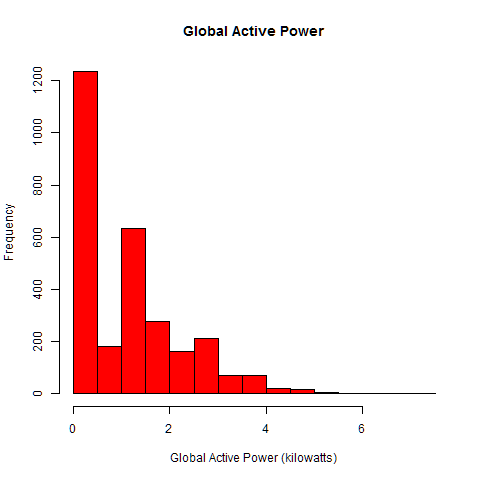
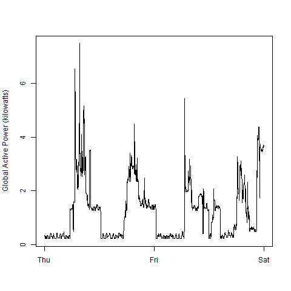
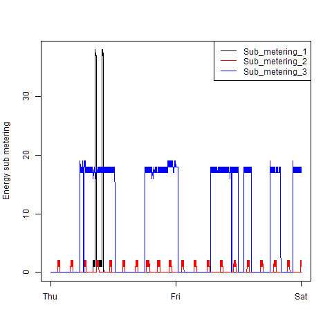
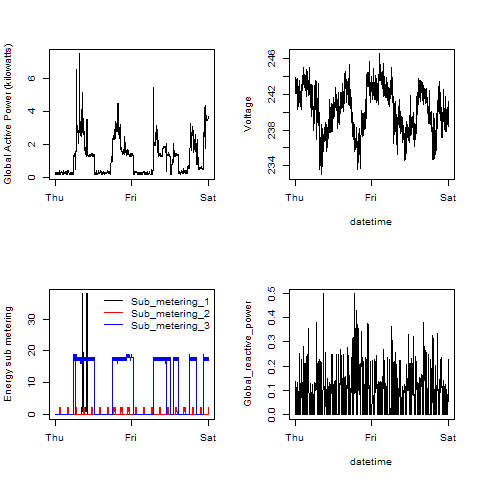

Loading & Preparing the Data
# Read in just the data we want
dat <- read.table(
pipe('grep "^[1-2]/2/2007" "household_power_consumption.txt"')
,sep=";"
,na.strings="?")
# Apply the headers
names(dat) <- c(t(
read.table("household_power_consumption.txt",sep=";",nrows=1)))
# Wrangle the given date and time strings into a more useful date form
dat$DateTime <- strptime(
paste(dat$Date,dat$Time),format="%d/%m/%Y %H:%M:%S")
dat <- dat[,c(10,3:9)]
|
Plot 1

# Create Plot 1 (red histogram) to .png
png(filename = "plot1.png",width=480,height=480,bg="transparent")
hist(dat$Global_active_power
,col="red"
,main="Global Active Power"
,xlab="Global Active Power (kilowatts)")
dev.off()
|
Plot 2

# Create Plot 2 (global active power by day) to .png
png(filename = "plot2.png",width=480,height=480,bg="transparent")
plot(dat$DateTime
,dat$Global_active_power
,type="l"
,xlab=""
,ylab="Global Active Power (kilowatts)")
dev.off()
|
Plot 3

# Create Plot 3 (energy submetering by day) to .png
png(filename = "plot3.png",width=480,height=480,bg="transparent")
plot(dat$DateTime
,dat$Sub_metering_1
,xlab=""
,ylab="Energy sub metering"
,type="l"
,col="black")
points(dat$DateTime
,dat$Sub_metering_2
,type="l"
,col="red")
points(dat$DateTime
,dat$Sub_metering_3
,type="l"
,col="blue")
legend("topright"
,lwd=1
,lty=1
,col=c("black","red","blue")
,legend=c("Sub_metering_1","Sub_metering_2","Sub_metering_3"))
dev.off()
|
Plot 4

# Create Plot 4 (four-in-one chart) to .png
png(filename = "plot4.png",width=480,height=480,bg="transparent")
par(mfrow=c(2,2))
#TopLeft Chart
plot(dat$DateTime
,dat$Global_active_power
,type="l"
,xlab=""
,ylab="Global Active Power (kilowatts)")
#TopRight Chart
plot(dat$DateTime
,dat$Voltage
,type="l"
,xlab="datetime"
,ylab="Voltage")
#BottomLeft Chart
plot(dat$DateTime
,dat$Sub_metering_1
,xlab=""
,ylab="Energy sub metering"
,type="l"
,col="black")
points(dat$DateTime
,dat$Sub_metering_2
,type="l"
,col="red")
points(dat$DateTime
,dat$Sub_metering_3
,type="l"
,col="blue")
legend("topright"
,lwd=1
,lty=1
,col=c("black","red","blue")
,legend=c("Sub_metering_1","Sub_metering_2","Sub_metering_3")
,bty="n")
#BottomRight Chart
plot(dat$DateTime
,dat$Global_reactive_power
,type="l"
,xlab="datetime"
,ylab="Global_reactive_power")
dev.off()
|